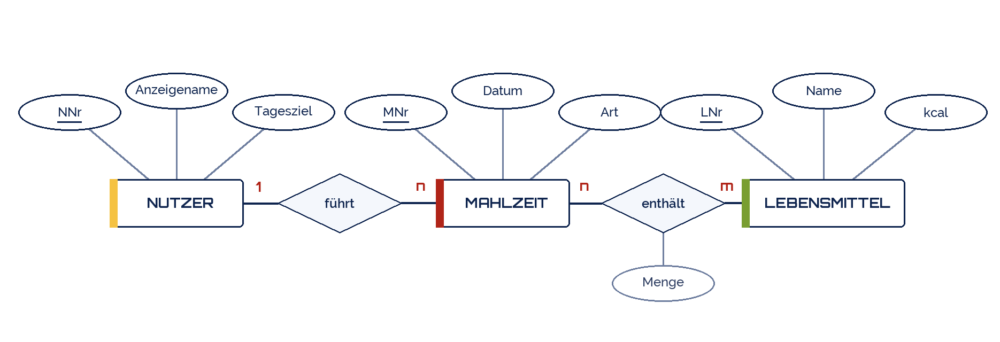
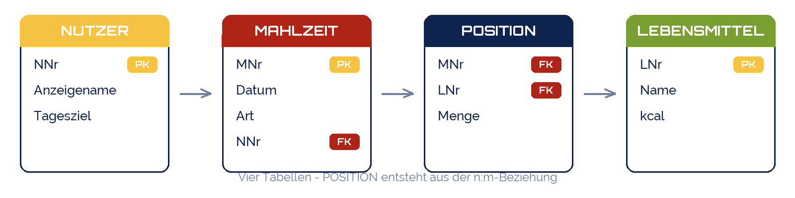

Good morning!
Nur das Schöne wird die Welt retten!
Fjodor Dostojewski
Nicht verzagen, Doc Alvers fragen!
Informatik — FOS 12
Datenbankanbindung planen — das ER-Modell aus Lernbereich 1 kommt zurück
Nicht verzagen, Doc Alvers fragen!
Kapitel 01
Eine Webseite ist nur die Oberfläche
Nicht verzagen, Doc Alvers fragen!
Ohne Datenmodell entstehen Seiten, die später nicht zusammenpassen
Die Fragen sind dieselben wie in Lernbereich 1: Welche Dinge? Welche Beziehungen?
Ihr habt das Werkzeug schon: ER-Modell, Überführung, Normalformen
Ein Fehler im Modell kostet in der Umsetzung das Zehnfache — jetzt ist er billig
Am Ende dieser Woche steht ein Schema, gegen das ihr zwei Wochen lang programmieren könnt
Nicht verzagen, Doc Alvers fragen!
| Schritt | Frage | Ergebnis |
|---|---|---|
| 1 Substantive | Über welche Dinge speichern wir etwas? | Liste der Entitätstypen |
| 2 Eigenschaften | Was wissen wir über jedes Ding? | Attribute, Schlüssel markiert |
| 3 Beziehungen | Wie hängen die Dinge zusammen? | Beziehungstypen mit Kardinalität |
| 4 Überführung | Welche Tabellen entstehen daraus? | Schema mit PK und FK |
Jeder n:m-Beziehungstyp wird zu einer eigenen Tabelle — das ist die häufigste Falle
Danach mit den Normalformen gegenprüfen: steht jede Information genau einmal?
Nicht verzagen, Doc Alvers fragen!

1:n zwischen Nutzer und Mahlzeit — ein Nutzer führt viele Mahlzeiten
n:m zwischen Mahlzeit und Lebensmittel, mit dem Beziehungsattribut Menge
Genau dieses n:m wird gleich zur dritten Tabelle
Nicht verzagen, Doc Alvers fragen!
Kapitel 02
Aus dem Modell werden Tabellen
Nicht verzagen, Doc Alvers fragen!

Die 1:n-Beziehung wandert als Fremdschlüssel NNr in die Tabelle MAHLZEIT
Die n:m-Beziehung wird zur Tabelle POSITION mit zusammengesetztem Schlüssel
Das Beziehungsattribut Menge hat nur dort Platz — nirgends sonst
Nicht verzagen, Doc Alvers fragen!
CREATE TABLE nutzer (
nnr INTEGER PRIMARY KEY,
anzeigename TEXT NOT NULL,
tagesziel INTEGER
);
CREATE TABLE mahlzeit (
mnr INTEGER PRIMARY KEY,
datum TEXT NOT NULL,
art TEXT,
nnr INTEGER REFERENCES nutzer(nnr)
);
CREATE TABLE position (
mnr INTEGER REFERENCES mahlzeit(mnr),
lnr INTEGER REFERENCES lebensmittel(lnr),
menge REAL,
PRIMARY KEY (mnr, lnr)
);Nicht verzagen, Doc Alvers fragen!
Kapitel 03
Welche Seite braucht welche Abfrage?
Nicht verzagen, Doc Alvers fragen!
| Seite | zeigt / tut | Tabellen | Abfrage (grob) |
|---|---|---|---|
| index.html | Begrüßung, Tagesziel | nutzer | SELECT ... WHERE nnr = ? |
| tag.php | Mahlzeiten eines Tages | mahlzeit, position, lebensmittel | JOIN über drei Tabellen |
| neu.php | Mahlzeit eintragen | mahlzeit, position | INSERT INTO ... |
| liste.php | alle Lebensmittel, sortiert | lebensmittel | SELECT ... ORDER BY name |
| suche.php | Lebensmittel suchen | lebensmittel | WHERE name LIKE ? |
Diese Tabelle ist das Planungsergebnis der Woche — sie sagt, was zu programmieren ist
Fällt eine Seite auf, die keine Datenbank braucht: gut, die ist schnell fertig
Fehlt einer Abfrage eine Tabelle: dann fehlt dem Modell etwas — jetzt nachbessern
Nicht verzagen, Doc Alvers fragen!
SELECT m.datum, m.art, l.name, p.menge, l.kcal * p.menge / 100 AS kcal_gesamt FROM mahlzeit m JOIN position p ON p.mnr = m.mnr JOIN lebensmittel l ON l.lnr = p.lnr WHERE m.nnr = ? AND m.datum = ? ORDER BY m.mnr;
Nicht verzagen, Doc Alvers fragen!
Der Verbund (JOIN) setzt zusammen, was die Normalisierung getrennt hat
Die Fremdschlüssel sind genau die Spalten, über die verbunden wird
Das Fragezeichen ist ein Platzhalter — nie Nutzereingaben in den SQL-Text kleben
AS benennt eine berechnete Spalte, damit die Ausgabe lesbar bleibt
Testet jede Abfrage zuerst im DBMS, erst danach im Programm
Nicht verzagen, Doc Alvers fragen!
Kapitel 04
Problemanalyse und Lösungsentwurf schriftlich
Nicht verzagen, Doc Alvers fragen!
| Abschnitt | Inhalt | Umfang |
|---|---|---|
| Problemanalyse | Was soll die Anwendung leisten? Für wen? Welche Daten? | ½ Seite |
| Datenmodell | ER-Modell als Zeichnung, mit Kardinalitäten | 1 Bild |
| Schema | Tabellen mit Primär- und Fremdschlüsseln, CREATE-Anweisungen | 1 Seite |
| Anbindungsplan | die Tabelle „Seite — zeigt — Tabellen — Abfrage“ | 1 Tabelle |
| Offene Fragen | was noch geklärt werden muss und von wem | Stichpunkte |
Diese fünf Punkte sind zugleich der Bewertungsteil „Prozess“ — sie werden gelesen
Schreibt in Fachsprache: Entitätstyp, Kardinalität, Fremdschlüssel, Verbund
Nicht verzagen, Doc Alvers fragen!
Alles in eine Tabelle: erzeugt genau die Anomalien aus Woche 3
n:m ohne eigene Tabelle: geht nicht, egal wie sehr man es sich wünscht
Kein Primärschlüssel: dann lässt sich kein Datensatz eindeutig ansprechen
Berechnetes gespeichert: Kalorien pro Mahlzeit gehören berechnet, nicht abgelegt
Zu groß geplant: lieber vier Tabellen, die laufen, als zehn, die nie fertig werden
Nicht verzagen, Doc Alvers fragen!
Erst das Modell, dann das Schema, dann der Anbindungsplan. Wer in dieser Reihenfolge arbeitet, programmiert nur einmal.
Merksatz
Nicht verzagen, Doc Alvers fragen!
Fast jede Website, die mehr als Text zeigt, ist eine Datenbankanwendung mit Oberfläche
WordPress betreibt über 40 % aller Websites — mit einem Schema aus rund zwölf Tabellen
SQLite steckt in jedem Smartphone, in Browsern und Flugzeugen — die meistverbreitete Datenbank der Welt
Die größte Schwachstelle von Webanwendungen war jahrelang die SQL-Injection — Thema in Woche 30
Nicht verzagen, Doc Alvers fragen!
Zeichnet das ER-Modell eures Themas mit mindestens drei Entitätstypen und Kardinalitäten
Überführt es in ein Schema und schreibt die CREATE TABLE-Anweisungen auf
Prüft mit den Normalformen gegen — dokumentiert, was ihr geändert habt
Füllt den Anbindungsplan für alle geplanten Seiten aus
Legt Testdaten an: drei bis fünf Zeilen je Tabelle, frei erfunden, keine echten Personen
Nicht verzagen, Doc Alvers fragen!